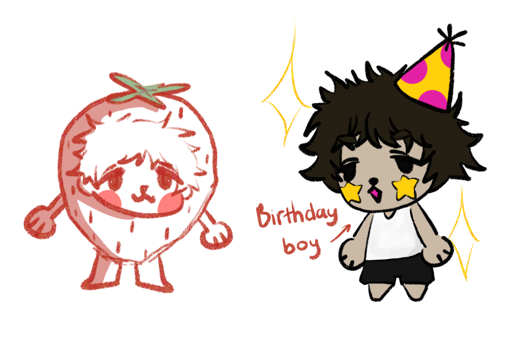
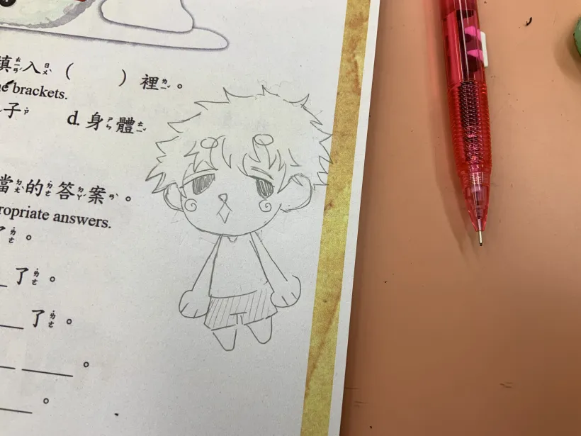
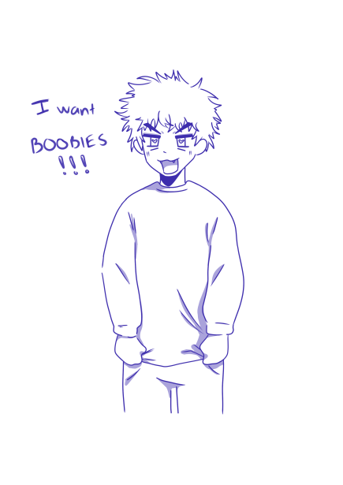

❤ From Irene to Andy ❤
HELLO BABY!! HAPPY 17TH BIRTHDAY!!! WOOHOOOO
You have went through so many ups and downs not just this year but your whole life and yet you are still managed stick around in this earth. I’m really proud of you Andy, you showed me your hard working, your tear, sweat and I was amazed on how did you managed to become this far after all of the trauma you went through. I remember when we first talk again on April 30th after a year of your disappearance, you are truely the funniest guy I have ever met, also the prettiest, kindest, coolest, loveliest, sweetest boy I have ever seen in my entire life. When we first start talking, I already felt a connection, I felt a bond between us, I was at a low point in my life until I met you. You were the onky one who cares about me, listen to me, tslk to me and the very first one to accept who I am. I really love you so much, I have never loved anyone this much ever, sometimes I be thinking about what will happen if we ever break up or got in bad terms, it hurts me so much because I really don't want to lose you nor hurt you. You are the first of my everything, first relationship, first boyfriend, first person who I can be myself the most to. I’m still in shock by how I deserve a someone like you, you are literally so so perfect and after all the trauma and bad people kicking you, you always treat other people with respect and care about everyone, you are literally an angel Andy. Words can’t describe how I’m feeling right now writing you this, I’m very very grateful and happy to have a person like you by my side always supporting me. I also want to apologise for everything I’ve done that has hurted you, being in a relationship is like that, it has ups and downs and because of you (also a bit of me), you had helped this relationship a lot, you are the most patient guy ever, you give me compliments all the time it makes me feel very very shy and happy, you bought me a lot of things, care for me, helped me with my studying, listen to me being stupid, comfort me when I’m sad, write letters, sleep with me and there are so many more still on the list. I love you so much baby, I hope we can stay like this for a long time, grow up together and then stay in the same house, thinking about us cuddling and finally being able to skin touch skin each other makes me so excited that I got goosebumps.Thank you so much for making me feel safe, thankyou so much for being the best boyfriend ever Andy, you truely are the best thing to ever happen to me. I love you so much baby, happy 17th birthday!! sorry if my presents are not as good as yours I tried my best, I hope you like it! MWA XOXO ❤️
0:00 12/30/2023
this how you got me like

DRAWINGSS
  this took me 3 days to make with the help of my silly friends, shout out to them! especially Luke!!